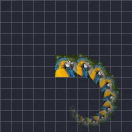

تکرار

لیئر کی متعدد کاپیاں متحرک طور پر بناتا ہے۔
ریپیٹ لیئر کی کاپیاں بناتا ہے، ایک کے بعد ایک۔ کاؤنٹ کاپیوں کی تعداد ہے، آفسیٹ یہ کہ ہر کاپی پچھلی کاپی سے کتنی دور جاتی ہے، زاویہ اور اسکیل یہ کہ ہر ایک کیسے مڑتی اور بڑھتی ہے، اور ٹائم ہر کاپی میں تاخیر ڈالتا ہے تاکہ وہ لیئر کے پیچھے ٹریل کی طرح چلیں۔ دیگر ترتیبوں کے لیے لینیئر ریپیٹ، ریڈیل ریپیٹ اور گرڈ ریپیٹ دیکھیں۔
سیٹنگز
| سیٹنگ | قسم | رینج | ڈیفالٹ |
|---|---|---|---|
| تعداد | نمبر | 0 سے 9999 تک | 10 |
| وقت | نمبر | 0 سے 9999 تک | 0 |
| آفسیٹ | پوائنٹ (X, Y) | -99999 سے 99999 تک | 0, 0 |
| زاویہ | زاویہ | -3600° سے 3600° تک | 0° |
| اسکیل | نمبر | 0 سے 10 تک | 1 |
| الفا | نمبر | 0% سے 100% تک | 100% |